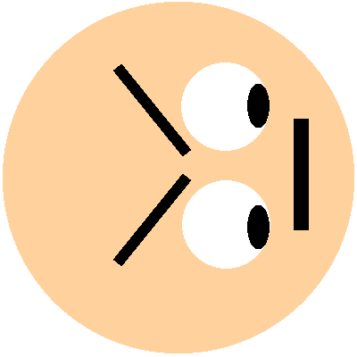

About Me
My name is Robert White and I go online by the name armedturret. I've been interested in software engineering since 5th grade and started developing C++ in 7th which is my current language of choice. Now, in high school, I develop games in my free time as well as participate in FIRST Robotics on Team 2342 as a software programmer (Who would've guessed?).
I have worked on several programs throughout my programming career. I started out trying to make games in unity but was confused by Object Oriented Programming at the time and I stopped. My first program became a LUA mod for Garry's mod but then I decided I would like to make full-scale games. I started by following the tutorial series MakingGamesWithBen and used the engine to make a now-defunct rougelike called "InfiniDungeon". I decided to make the first version of Glass Wall in 8th grade, but it was horribly unorganized and was scrapped within a month. Afterward, inspired by the text-adventure ZORK, I made the Dragonhunt Text Adventure Engine. The engine works well and I consider it to be my first "complete" accomplishment. I took a break from C++ and decided to help a friend make a discord bot built in node.js although he couldn't make a time commitment and the project ended up dying. Currently, I have gotten back to making Glass Wall and that is where I am at now.